Contributing to quincunx development
Source:vignettes/quincunx-development.Rmd
quincunx-development.RmdIf you feel like contributing to quincunx source code please feel free to make a pull request or ask questions in GitHub Issues.
API underlying retrieval functions
To gain a glimpse of how the core functions of quincunx are organised and dependent on each other please check out this table: 
Family of get_<entities>() functions
At the exposed API, the family of functions that the user sees are
those get_<entities>(), e.g.,
get_scores() or get_sample_sets(). The family
of internal functions coerce_to_S4_<entities>()
translate a list of relational tibbles to an S4 object. The advantage of
having these lists of tibbles encapsulated as S4 objects is that you can
then benefit from methods written for them. The placeholder
<entities> stands for one of: scores,
publications, sample_sets,
performance_metrics, traits,
trait_categories, cohorts or
releases.
Family of get_<endpoint> functions
<endpoint> is typically a loosely based snake case
name of a PGS Catalog endpoint, e.g., the endpoint
'/rest/score/search' used with the trait_id
parameter has the corresponding quincunx function:
get_score_by_trait_id().
Family of get_<type> functions
<type> is often the name of a PGS Catalog entity
in the singular, e.g., score for polygenic scores, that
corresponds to the function get_score(). This family of
functions will return always the same type of return value, that is a
list of relational tibbles. The heavy lifting of translation from JSON
to tibbles happens in as_tidy_tables_<entities>.
Low-level functions: get(), request_all()
and request()
At the bottom of the stack httr::GET() is the actual
function that retrieves a JSON response from a specific URL.
request() is quincunx’s fundamental function after
httr::GET(). request() calls a memoised version of
httr::GET() —memoised_GET()— to make the
package more agile and to avoid hammering the REST API server
unnecessarily. request_all() does essentially the same as
request() but handles pagination, meaning that it will
follow all pages until it has gathered all results. The
get() function adds metadata columns to the tibbles,
namely, ..resource (full endpoint URL),
..timestamp (endpoint retrieval timestamp),
..page (endpoint pagination).
S4 classes
S4 classes are defined and documented in source files named
class-<entities>.R, e.g., class-scores.R
or class-performance_metrics.R
Parsing of JSON to tibbles
The conversion from JSON use done using the terrific package tidyjson. The source
files containing the code for this are
parse-<entities>.R, e.g.,
parse-cohorts.R or parse-publications.R. Some
parsing functions are also used across different entities, and in those
cases they have dedicated source files:
unwrap_<entities>.R, e.g.,
unwrap_efotrait.R or unwrap_sample.R.